Here are some pictures I took!
First set:
 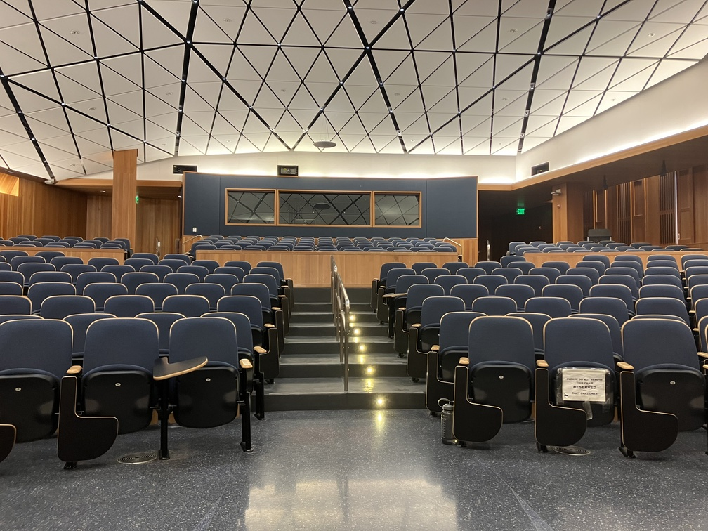
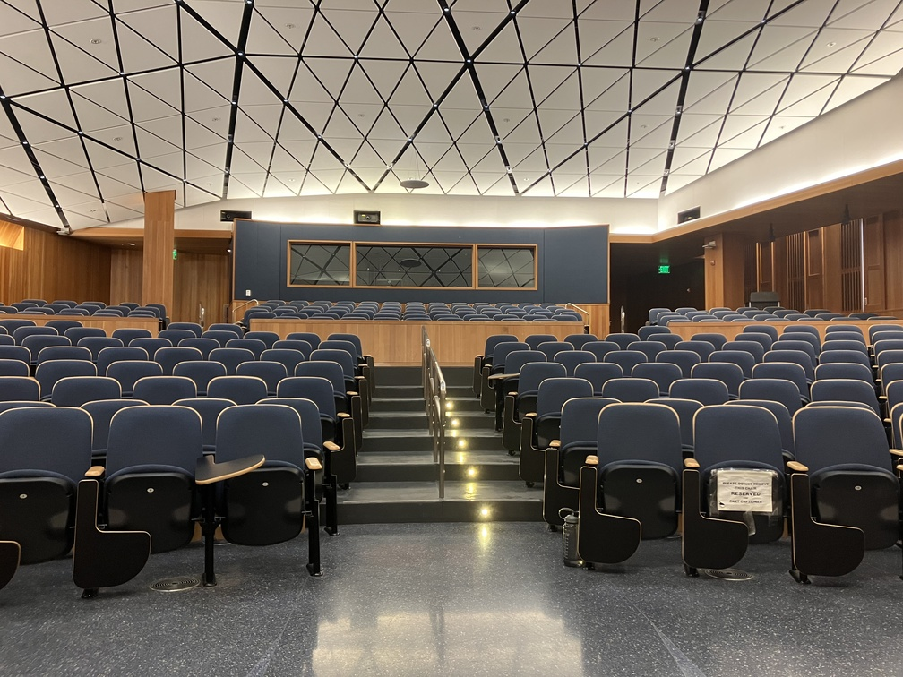
Second set:
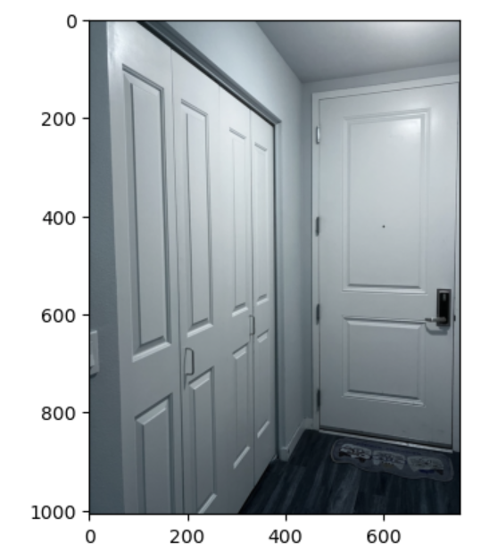 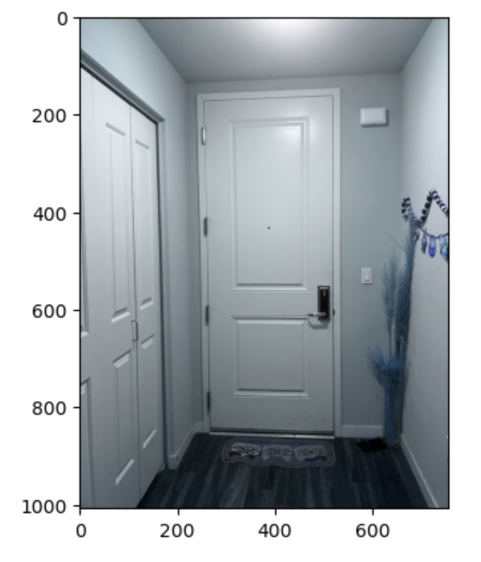Third set:
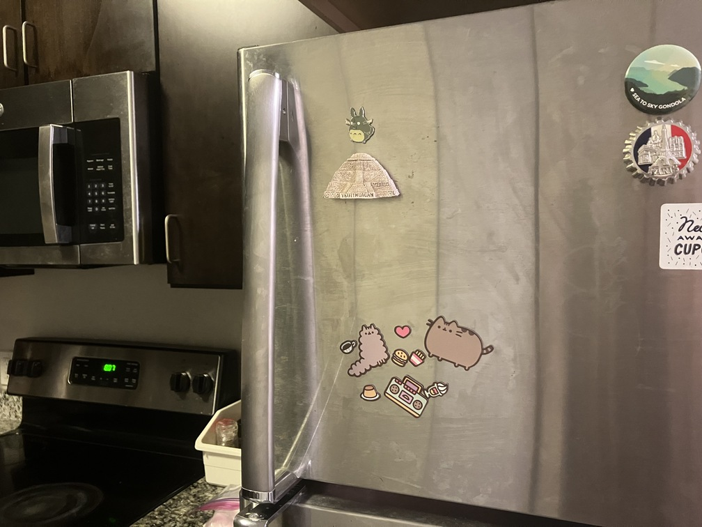
To compute the homography matrix, I first generated 15 corresponding points in each pair of images using the tool provided. Then, I set up a linear system of 15 equations (Ah=b) and solved it using np.linalg.lstsq.
A is
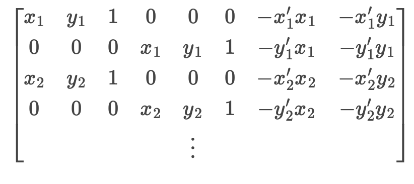b is

To warp an image, I first found the warped corners using the homography matrix and thus found the bounding box size. Then, I used inverse warping to map the points on this plane. Below are the warped images in each pair.
 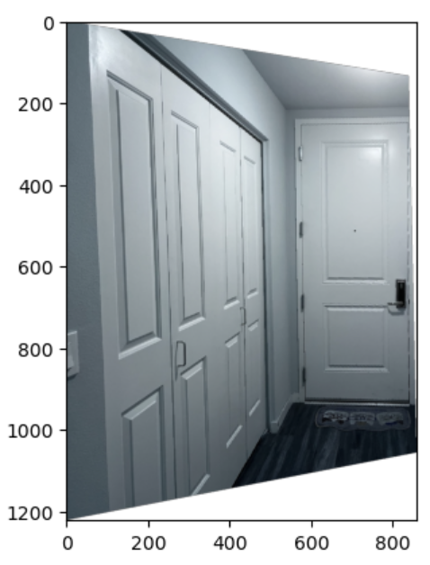
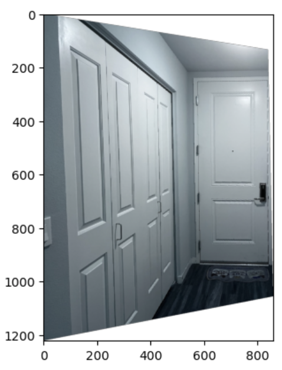

To make sure that my homography/warping worked, I took pictures of rectangular items from a side angle and used my warp function to rectify them. I used the provided tool to generate 4 pairs of corresponding points by clicking the 4 corners in the image and manually defining im2_points to be a rectangle.
Example 1:


Example 2:
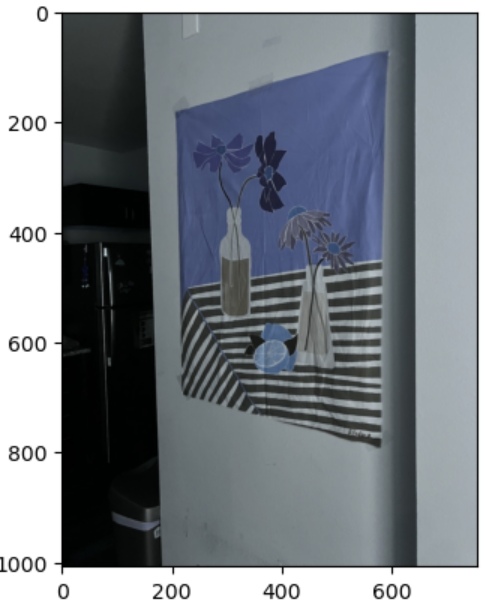
I first found the bounding box size by finding all the corners of the im1(warped) and im2(unwarped). Then, I set up 2 canvases of this size, one for im1(warped) and another one for im2(unwarped). I then shifted im2 to the correct location based on min_x and min_y of the corners. Eventually, I blended the 2 canvases together to generate the mosaic.
First set:
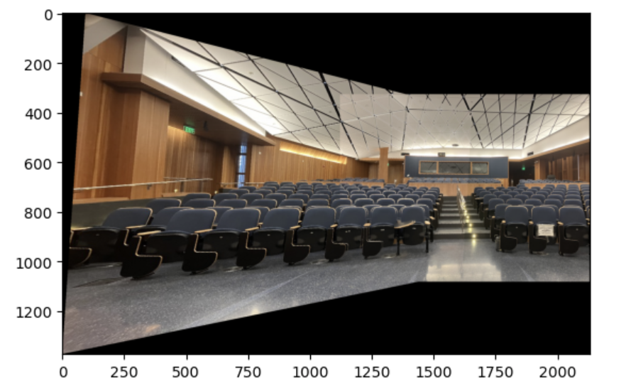
Second set:

Third set:
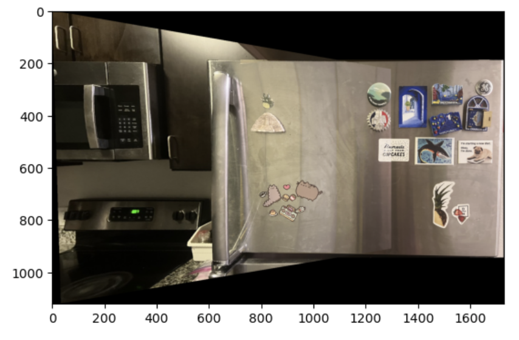
The first step was to detect all the Harris corners using the code provided. For each image, a Gaussian pyramid was created, and the interest points were extracted from each level of the pyramid.
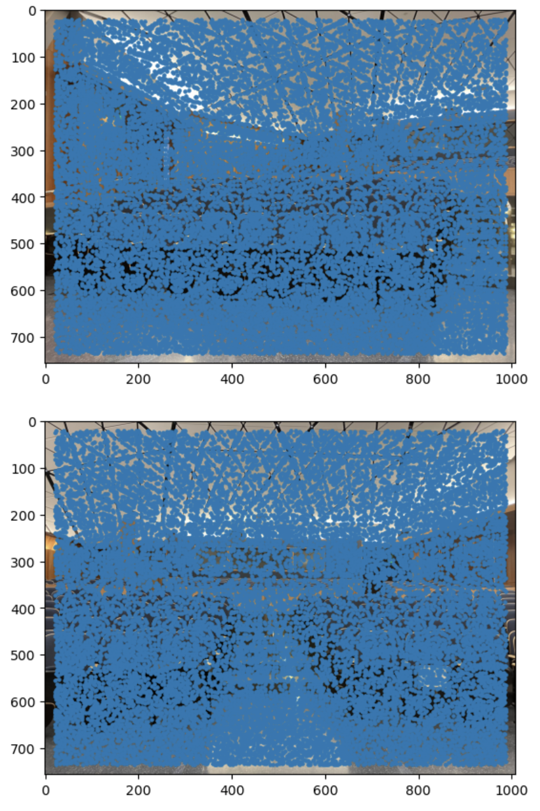 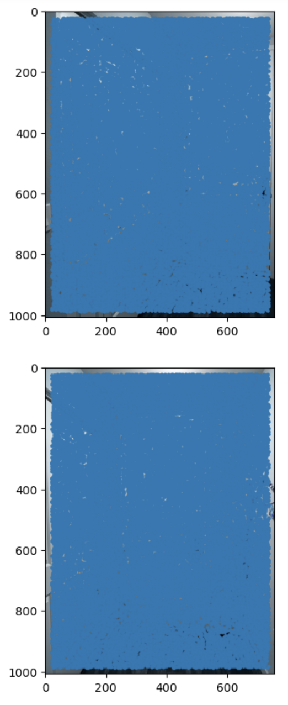 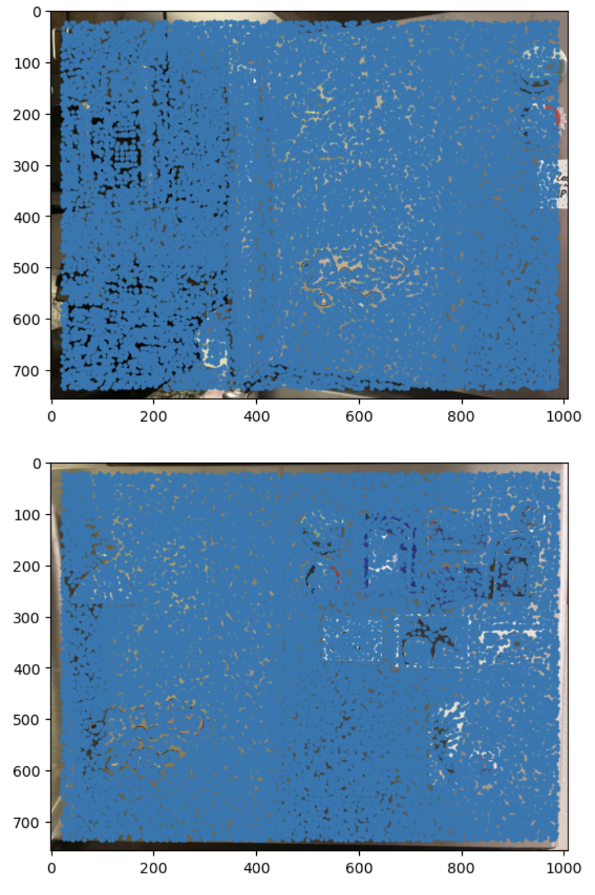To restrict the number of interest points extracted, I used adaptive non-maximal suppression to only retain those that were a maximum in a neighbourhood of radius r pixels. As suppression radius decreased from infinity, interest points were added to the list until nip = 500 points were selected.
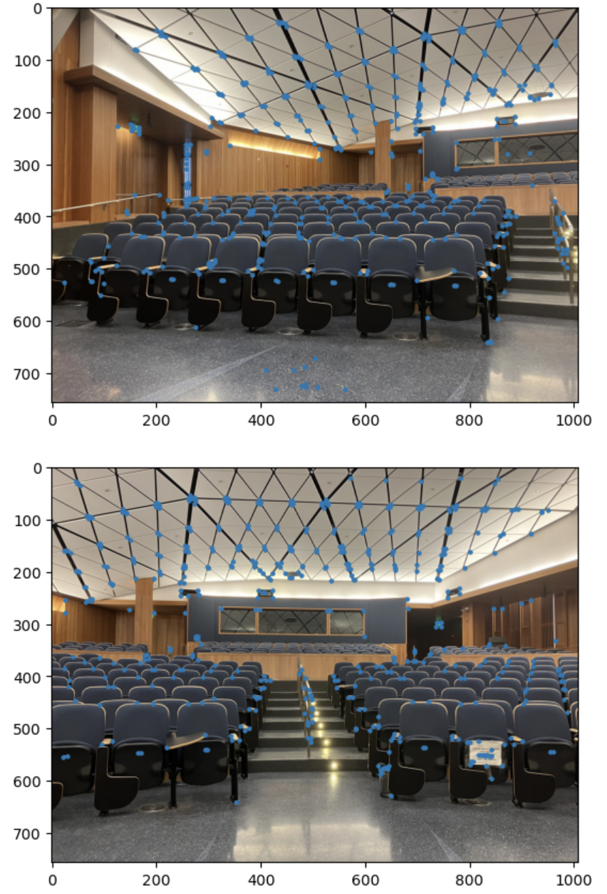 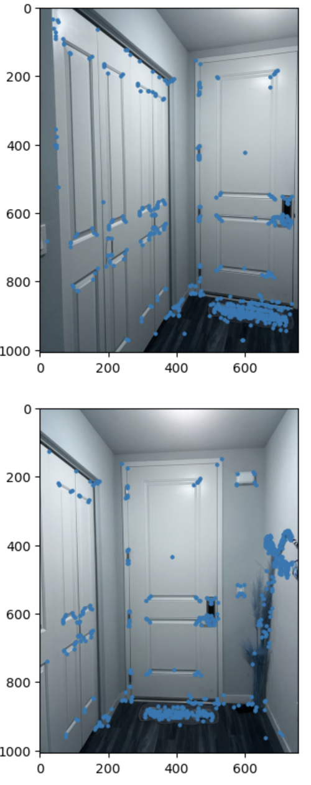 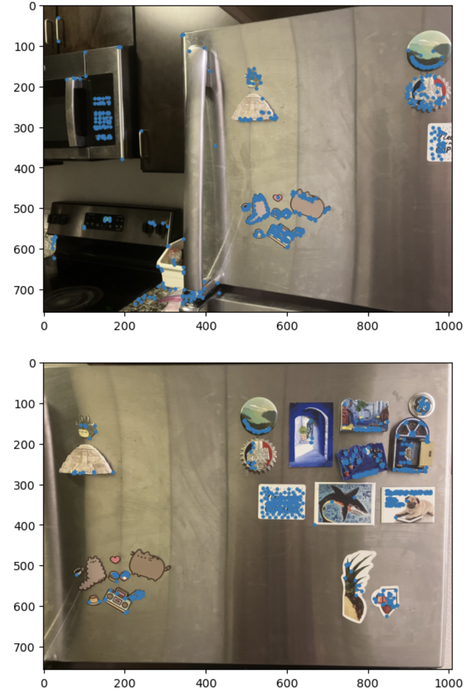As suggested in the paper, I created 40x40 windows around the corners. Then, I sampled 8x8 patches and used spacing of 5 pixels. Then I normalized the descriptor vector so that the mean was 0 and the standard deviation was 1.
To match features in the two images, I used a threshold to compare against the ratio of the first nearest neighbor error and the second nearest neighbor error as suggested by Lowe.
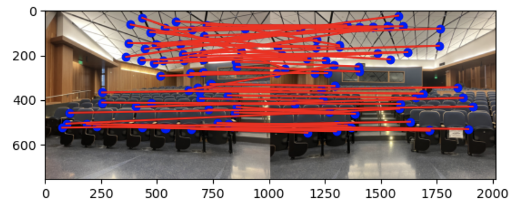 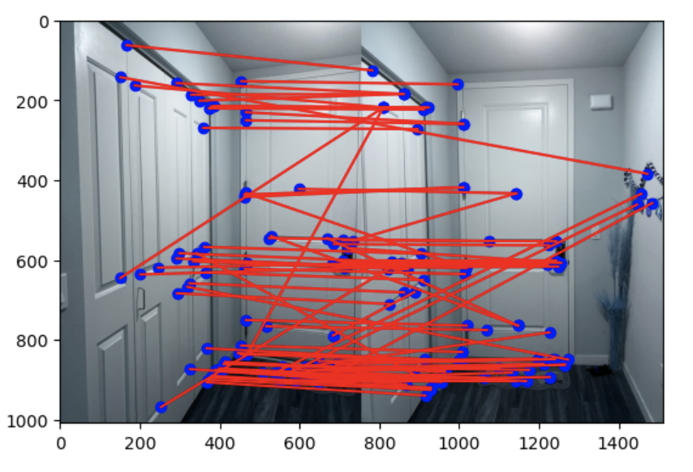 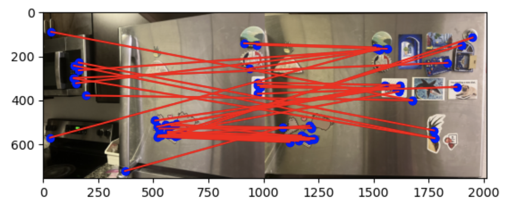First, I randomly selected 4 feature pairs from the previously found matching feature points. I computed a homography from these points. Then, I calculated the number of inliers where dist(p2, H p1) is less than a threshold. Then, I found the homography with the largest number of inliers. I then recomputed the homography using all of the inliers.
Here are the mosaic results:
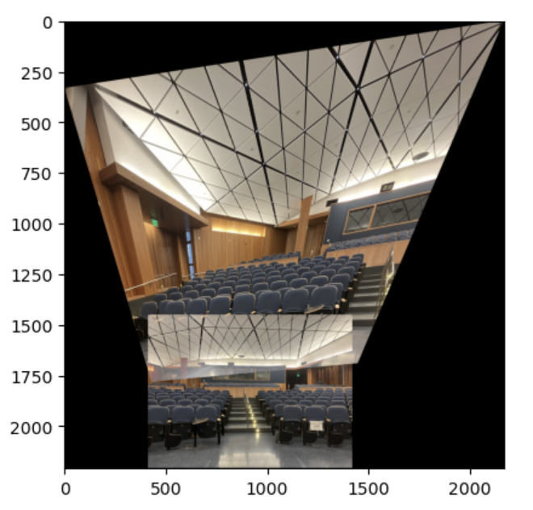Left: manually
Right: automatically
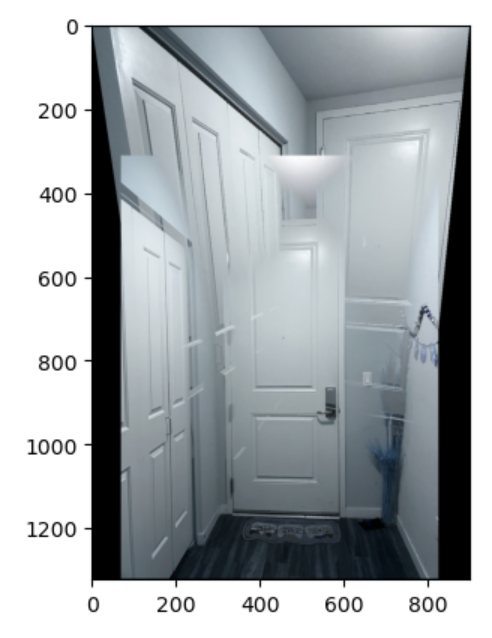
Left: manually
Right: automatically
Left: manually
Right: automatically
I think the most interesting thing I've learned in the project is the feature detection. It is really cool to automatically detect and match the features in 2 images, making the process much easier and less prone to human mistakes.